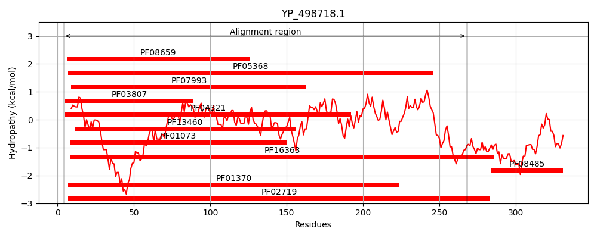

Hit Accession: WP_216200341
Hit TCID: 9.B.18.2.2
Hit Description: gnl|BL_ORD_ID|22111 gnl|TC-DB|WP_216200341.1|9.B.18.2.2 polysaccharide biosynthesis protein [Clostridium algidicarnis]
Mach Len: 276
e:0.000000
Query TMS Count : 0
Hit TMS Count: 5
TMS-Overlap Score: 0.000000
Predicted Substrates:None
BLAST Alignment:
Score: 423 , Bit scores: 167 bits, E-value: 7.4e-47, Alignment length: 276, Percentage identity: 38
Query: 4 DKILLITGGTGSFGNAVMKQFLDSNIKEIRIFSRDEKK----QDDIRKKYNNSKLKFYIGDVRDSQSVETAMRDV--DYVFHAAALKQVPSCEFFPVEAVKTNIIGTENVLQSAIHQNVKKVICLSTDKAAYPINARGISKAMMEKVFVAKSRNIRSEQTLICGTRYGNVMASRGSVIPLFIDKIKAGEPLTITDPDMTRFLMSLEDAVELVVHAFKHAETGDIMVQKAPSS-TVGDLATALLELF----EADNAIEIIGTRHGEKKAETLLTREE 268
+K++++TGG GS G+ + +Q N KE+ IF E Q++++ Y + LK IG +RD + +ET + VF+AAA K VP E P EA+K N+ GT N+ ++A VK+ + +STDKA P N G SK + E + A + ++E + R+GNV+ S GSVIPLF +I G P+T+T D+TRF M + +A +LV+ A +A+ G+I V S + DLAT L++L D I++ G R GEK E LL EE
Sbjct: 279 NKVVMVTGGGGSIGSELCRQIAIFNPKELIIFDIYENNAYDIQNELKYNYPSLNLKVLIGSIRDKKRLETIFCKYRPEIVFNAAAHKHVPLMEESPGEAIKNNVFGTLNLAETADKYGVKRFVMISTDKAVNPTNVMGASKRICEMIVQAMDKVSKTEFVAV---RFGNVLGSNGSVIPLFKKQIAKGGPVTLTHKDITRFFMLIPEAAQLVIQAGAYAKGGEIFVLDMGSPIKIYDLATDLIKLSGLVPNEDIEIKVTGLRPGEKLYEELLMSEE 551 | Protein Hydropathy Plots: |
|---|
|  | |
Pairwise Alignment-Hydropathy Plot:
|
|---|
|